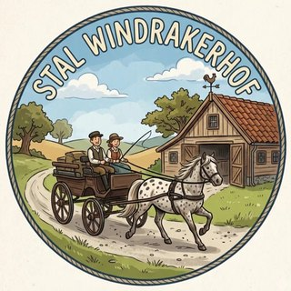

Vul je naam in bij een dag. Het wordt meteen opgeslagen en is voor iedereen met deze link zichtbaar.
Vink vast aan bij een naam om die persoon elke week automatisch op die dag terug te laten komen, tot iemand het weer uitvinkt.
Zodra een nieuwe week begint, schuift "Volgende week" vanzelf door naar "Deze week". Oranje velden zijn nog niet ingevuld.
Het weerbericht (Puth, Limburg) komt van Open-Meteo.